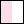

3 部首
漢字の構成要素となっている部分を部首といいます。部首には、「偏・旁・冠・脚・垂・繞・構」があります。部分に分けられない漢字もあります。

偏さんずい（海・泳）、にすい（凍・冷）、にんべん（使・便）、きへん（村・機）、のぎへん（科・秋）、てへん（持・打）、ゆみへん（引・張）、あしへん（路・跡）、ひへん（煙・灯）、うしへん（特・物）、がつへん・いちたへん（残・殊）、ぎょうにんべん（行・往）、にちへん・ひへん（時・晴）、けものへん（猫・狩）、しょくへん（飲・館）、いしへん（砂・研）、りっしんべん（情・快）、みみへん（職・聴）、くちへん（鳴・味）、ごんべん（語・話）、たまへん・おうへん（理・球）、しめすへん（社・神）、ころもへん（被・複）、いとへん（線・紙）、くるまへん（軽・転）、ふねへん（船・般）、めへん（眼・瞬）、こめへん（粒・粉）、かいへん（貯・財）、かねへん（銀・鉄）、うまへん（駅・験）、つちへん（地・場）、うおへん（鮮・鯉）、むしへん（蚊・蝶）、おんなへん（始・好）、こへん（孫・孤）、にくづき（臓・肝）、つきへん（朋・服）、とりへん（酸・配）、こざとへん（防・階）、やまへん（崎・峡）、たへん（略・町）、はばへん（幅・帳）、ほうへん・かたへん（族・旅）、やへん（短・知）、すきへん（耕・耗）、つのへん（触・解）、ほねへん（骸・髄） …
旁
りっとう（利・列）、ふしづくり（印・却）、おおざと（都・郡）、ちから（動・効）、すん（対・封）、あくび・けんづくり（次・歌）、るまた・ほこづくり（設・段）、のぶん・ぼくづくり（教・改）、おのづくり（新・断）、さんづくり（形・影）、おおがい・いちのかい（頭・額）、また（収・取）、ふるとり（雑・離）、ひ（化・北） …
冠
なべぶた・けいさんかんむり（交・京）、わかんむり（写・冠）、ひとやね・ひとがしら（今・会）、はちがしら・はち（公・分）、うかんむり（宇・宙）、くさかんむり（草・花）、はつがしら（発・登）、たけかんむり（箱・笛）、あめかんむり（雲・雷）、あなかんむり（空・究）、おいかんむり（老・者）、あみがしら（置・罪）、かみがしら（髪・髭）、つめかんむり（受・愛）、とらかんむり・とらがしら（虚・慮） …
脚
ひとあし（兄・光）、れっか・れんが（烈・然）、さら（盛・益）、こころ（思・想）、したごころ（慕・恭） …
垂
がんだれ（雁・原）、まだれ（店・広）、しかばね（屋・居）、とかんむり・とだれ（戻・雇）、やまいだれ（病・痛） …
繞
しんにょう・しんにゅう（道・進）、えんにょう（延・建）、そうにょう（起・越）、きにょう（魅・魁） …
構
くにがまえ（国・園）、もんがまえ（間・関）、けいがまえ・どうがまえ（同・円）、はこがまえ・かくしがまえ（区・医）、つつみがまえ（句・包）、ぎょうがまえ（術・街）、ほこがまえ（戒・或）、よく・しきがまえ（式・弐）、うけばこ・かんにょう（函・凹）、きがまえ（気）…
部分に分けられない字
（人・一・大・女・子・王・山…）